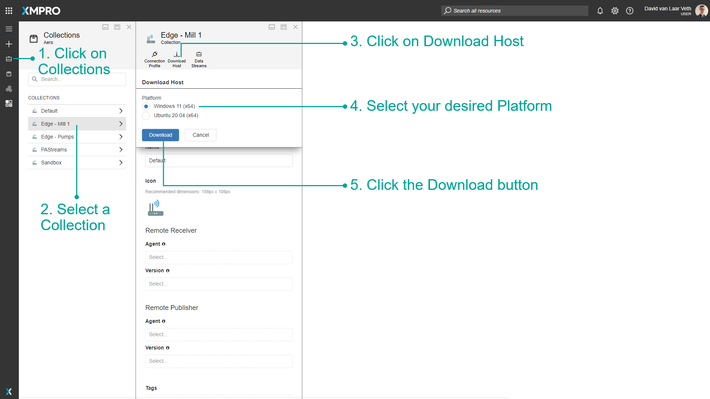

Install Stream Host
Note
Want to run Stream Host in Docker? Please jump to "Docker instructions for Stream Host".
Download the Connection Profile
Each Data Stream created in Data Stream Designer must belong to a Collection. You can download the information in a Collection as a file, known as a Connection Profile. This profile includes the device name, collection ID, server URL, secret, and key.
To simplify installing a Stream Host (also called a device), download the Connection Profile to avoid manually copying Collection details from Data Stream Designer to the installer.
To obtain a Connection Profile, follow the steps below.
- Log into Data Stream Designer and open the Collections page from the left-hand menu.
- Select the Collection you wish to use. If there isn't a Collection available, you can create one by clicking the New button, choosing a name for the collection, and clicking Ok.
- Click on Connection Profile.
- Choose a name for the device.
- Enter the File Key.
- Click Ok. The Connection Profile will automatically begin to download.
Download the Installer
Follow the steps below to download the XMPro Stream Host installer. From v4.4.7 onwards, ensure your network policy allows access to the download.app.xmpro.com domain.
- Log into Data Stream Designer and open the Collections page from the left-hand menu.
- Select the collection you wish to use.
- Click on Download Host.
- Select your desired platform.
- Click on the Download button to begin the download.

Choose your Platform
Choose the platform where you will install the Stream Host:
Troubleshooting
If your Stream Host is not appearing in a Data Stream Collection, follow these steps to troubleshoot:
- Check the Stream Host logs:
- By default, the Stream Host writes logs to STDOUT on the platform where it's running.
- Review these logs for details on why your Stream Host is unable to connect.
- Configure additional logging:
- For more detailed information, you can configure additional logging for the Stream Host.
- Verify Stream Host settings:
- Ensure the Stream Host is properly configured with the correct endpoint and credentials.
- Check system requirements:
- Confirm that your system meets the minimum requirements for running the Stream Host.
- Ensure accurate date and time settings:
- Verify that the date and time on the Stream Host platform are exactly synchronized with the XMPro server time.
- Even a one-minute discrepancy can cause authorization issues and prevent the Stream Host from connecting.
- Common issues to look for:
- Network connectivity problems
- Incorrect configuration settings
- Authentication issues
- Time synchronization errors
- If issues persist:
- If you're still experiencing problems after checking these points, contact XMPro support for further assistance.
Last modified: May 25, 2025